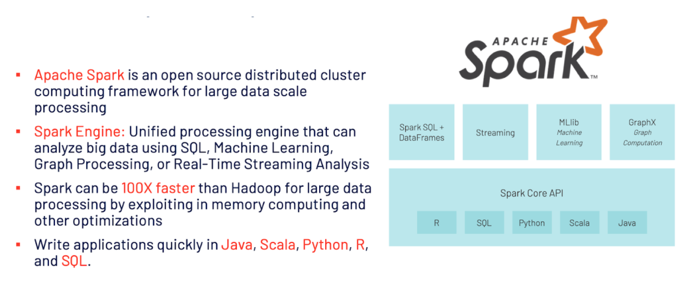

Apache Spark
Spark
An in-memory data processing engine for big data workloads
Spark is an open source distributed clustering computing framework
Spark runs 100 times faster in-memory and 10 times faster on disk than Hadoop MapReduce.
The reason is that Apache Spark processes data in-memory (RAM), while Hadoop MapReduce has to persist data back to the disk after every Map or Reduce action.
Does Spark use MapReduce or not?
The answer to the question is yes — but only the idea, not the exact implementation.
Example: Map - reduce - filter w/ RDDs
Running spark applications consist of two main components:
Driver
Executors

SparkSession
Object that provides a point of entry to interact with underlying Spark functionality.
Job
Parallel computation consisting of multiple tasks in response to a Spark action (e.g. collect, save, etc.).
Stage
Each job is divided into smaller sets of tasks that spended on each other. Each stage, there will be many tasks.
Spark will at best schedule a thread per task per core, and each task will process a distinct partition.
Task
Single execution that will be sent to the Spark executors.
DAGs
Spark execution plan
Jobs: each job is transformed into a DAG where each node could be a single or multiple Spark stages.
Stages - stages are created based on what operations can be performed serially or in parallel
Tasks - each stage is composed of tasks; each task is mapped to a single core and works on a single partition.
Driver OOM
In typical deployments, a driver is provisioned less memory than executors.
Common causes of OOM is calling
collectorbroadcastrelations to the remote executor.Easiest thing to do is reduce the number of partitions by using
coalescewhich avoids a full shuffleCan increase the driver memory
Executor OOM
Problems:
High concurrency
Inefficient queries
Incorrect configuration
How many tasks are executed in parallel on each executor will depend on the
spark.executor.coresproperty.If this value is set to a higher value without due consideration of the memory required, executors may fail with OOM
With more concurrency the overhead increase.
One Solution is to increase
spark.executor.memory
RDD
Resilient Distributed Dataset
Fault-tolerant collection of elements partitioned across the nodes of the cluster that can be operated on in parallel.
Spark persists an RDD in memory, allowing it to be reused efficiently across parallel operations and automatically recover from node failures.
RDDs support two types of operations:
Transformations
Actions
Two ways to create RDDs:
Parallelizing an existing collection in your driver program
Referencing a dataset in an external storage system
Disadvantage:
Being in-memory jvm objects, RDDs involve overhead of Garbage Collection and
Java serialization which are expensive when data grows.
DataFrame API
creating DataFrame you can instruct Spark to create a certain number of partitions.
groupBy()orjoin- Shuffle partitions are created during the shuffle stage.By default = 200.
Spark.sql.shuffle.partitionsStrategy:If the cardinality of a column will be very high, do not use that column for partitioning.
Example:
If you partition by a column userId and if there can be 1M distinct user IDs, then that is a bad partitioning strategy.
You can partition by a column if you expect data in that partition to be at least 1 GB.
Transformations
Transform Spark DataFrame into a new DataFrame without altering the data (immutable).
Lazy transformation - results are not computed immediately by recorded as a lineage (which is used later in the execution plan.
Example: map, select, filter, join, groupBy
coalesce
Decrease the number of partitions in the RDD to numPartitions.
Useful for running operations more efficiently after filtering down a large dataset.
repartition
Reshuffle the data in the RDD randomly to create either more or fewer partitions and balance it across them.
This always shuffles all data over the network.
Actions
A transformation is not invoked until an action is applied. Actions trigger the lazy executions.
Example:
show,take,count,collect
Map vs FlatMap
map: It returns a new RDD by applying a function to each element of the RDD.
Function in map can return only one item.
flatMap: Similar to map, it returns a new RDD by applying a function to each element of the RDD, but output is flattened.
Also, function in
flatMapcan return a list of elements (0 or more)
map()
c.parallelize([3,4,5]).map(lambda x: range(1,x)).collect()
Output:[[1, 2], [1, 2, 3], [1, 2, 3, 4]]
flatMap()
sc.parallelize([3,4,5]).flatMap(lambda x: range(1,x)).collect()
Output: notice the output is flattened out in a single list
Spark SQL API
Spark SQL is a Spark module for structured data processing.
ANSI-SQL2003
Catalyst Optimizer
Takes computation query and convert into an execution plan
Analysis
Logical Optimization
Physical Planning
Code Generation
Spark SQL takes advantage of the RDD model to support mid-query fault tolerance, letting it scale to large jobs too.
DataSet API
Is a distributed collection of data.
Python does not have the support for the Dataset API.
DataFrame API
Dataset organized into named columns. It is conceptually equivalent to a table in a relational database or a data frame in R/- Python, but with richer optimizations under the hood and has a schema.
Cache
Data is stored in memory.
DataFrames can fractionally be cached but partitions cannot be fractionally cached.
When to Cache?
DataFrame is commonly used during ML training
DataFrame commonly accessed for doing frequent transformations during ETL steps
Persist
Gives you more control on how your data is cached. For example, memory only, disk on and then serialized or unserialized.
When to Persist?
DataFrame that are too big to fit in memory
Inexpensive transformation on a DataFrame no requiring frequent use; regardless of size.
Shuffle
Shuffle is re-distributing data so that it’s grouped differently across partitions. This involves copying data across executors
A shuffle is where Spark reads from all the partitions to find all the values for all keys, and then bring together values across partitions to compute the final result for each key
Expensive operation since it involves disk I/O, data serialization, and network I/O
Serialization
Process by which a typed object is encoded into a binary representation or format and then decoded from binary format into its respective data typed object.
Task Not Serializable
If you initialize a variable on the driver and try to run it on the worker nodes, then “Task Not Serializable Exception” is raised.
Transformationsin Spark like ‘map’ are executed on the worker nodes and not in the driver node.To avoid having this error throw, initialize an instance of the class inside of a lambda function that is being passed to the map transformation
Garbage Collection
Java programs perform automatic memory management
In Java, GC is the process to reclaim garbage, or memory occupied by objects that are no longer in use by the program.
Serial Garbage Collector.
Parallel Garbage Collector.
CMS Garbage Collector
Goal:
The goal of GC tuning in Spark is to ensure that only long-lived RDDs are stored in the old generation and that the young generation is sufficiently sized to store short-lived objects.
Link: https://spark.apache.org/docs/latest/tuning.html#garbage-collection-tuning
Process
Java Heap space is divided in to two regions Young and Old.
The Young generation is meant to hold short-lived objects
The Old generation is intended for objects with longer lifetimes.
The Young generation is further divided into three regions:
Eden
Survivor1
Survivor2
A simplified description of the garbage collection procedure:
When Eden is full, a minor GC is run on Eden and objects that are alive from Eden and Survivor1 are copied to Survivor2.
The Survivor regions are swapped.
If an object is old enough or Survivor2 is full, it is moved to Old.
Finally, when Old is close to full, a full GC is invoked.
Structured Streaming
The objective is to treat a live data stream as a table that is being continuously appended.
This leads to a new stream processing model that is very similar to a batch processing model.
You will express your streaming computation as standard batch-like query as on a static table, and Spark runs it as an incremental query on the unbounded input table.
Broadcast
Broadcast variables allow you to keep a read-only variable cached on each machine rather than shipping a copy of it with tasks.
Serialization
Serialize an object means to convert its state to a byte stream so that the byte stream can be reverted back into a copy of the object.
Serialization is used for performance tuning on Apache Spark.
All data that is sent over the network or written to the disk or persisted in the memory should be serialized.
Serialization plays an important role in costly operations.
Map/Shuffle
Has heavy I/O activity for reading/writing from disk: Recommendations for handling bottleneck:
Spark.driver.memoryIncrease memory if expect larger data from
collect:Spark.shuffle.file.bufferAllows Spark more buffering before writing final map results to disk.
Joins
Broadcast Join - less shuffling required.
Spark uses Broadcast join by default if the data is less than
10MB.
Partitions
Maximizing Spark Parallelism:
For data management, partition is a way to arrange data into a subset of configurable and readable chunks or blocks of data on disk.
Ideal: is at least as many partitions as there are cores on the executor. If there are more partitions than there cores on each executor, then all the cores are kept busy.
Partitiondefault memory = 128 MB. If you decrease too small, “small file problem” increases I/O and causes performance degradation.
Spark ML
Transformer: accepts dataframe as an input and returns a new dataframe with one or more columns appended to it. - simply applies rule-based transformations.
Estimator: learns or “fits” parameters in a dataframe by calling the .fit method and returns a Model, which is a transformer
Pipeline: organizes a series of transformers and estimators into a single model. Pipelines are estimators, and the output of the
pipeline.fit()returns a PipelineModel, a transformer.One-hot encoding
Convert categorical values into numeric values
After performing StringIndexer - OneHotEncoder mades a column of category indices to a column of binary vectors.